De Casteljau's algorithm is a recursive approach to evaluating Bezier curves. It works by linearly interpolating between control points until a single point is obtained, which lies on the Bezier curve for a specific parameter t. The control points are a way for an artist/designer to manipulate the shape of the curve without having to worry about math. In my implementation, each step reduces the number of points by one, until a single point is left--the final point which is used to get the curve. Below we visualize the process of doing this with a bezier curve defined by 6 control points..
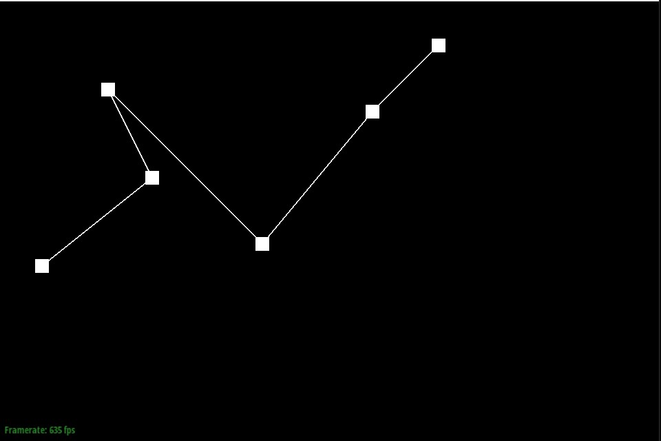 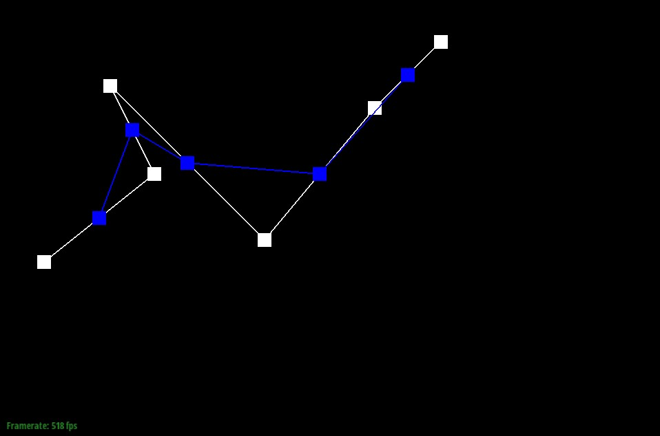 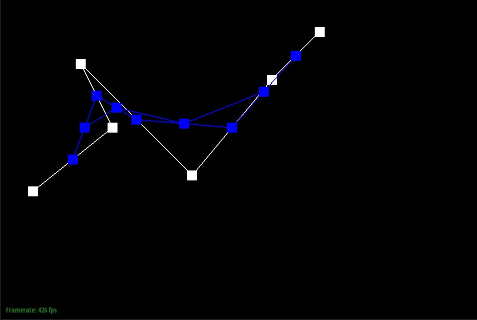 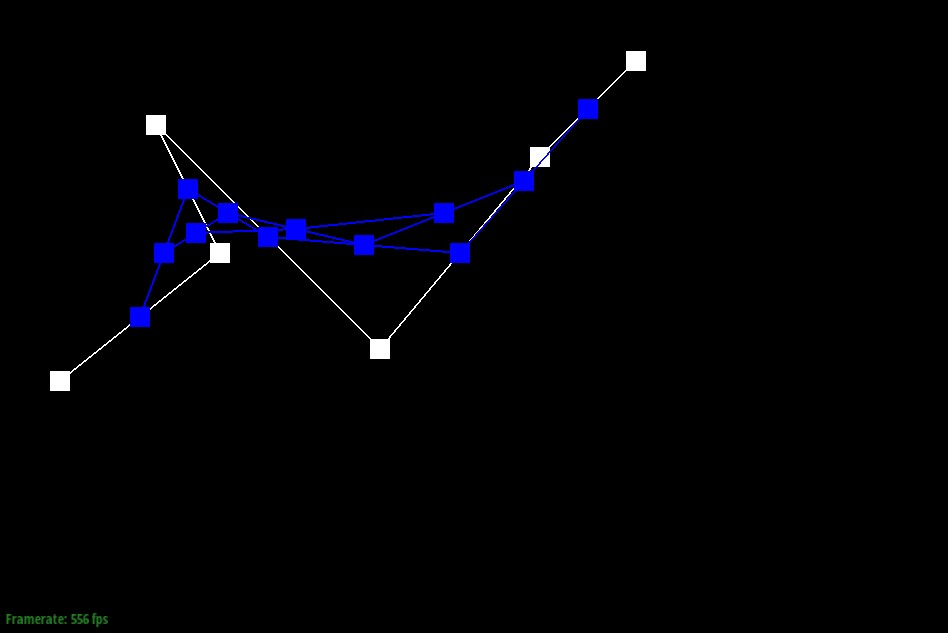 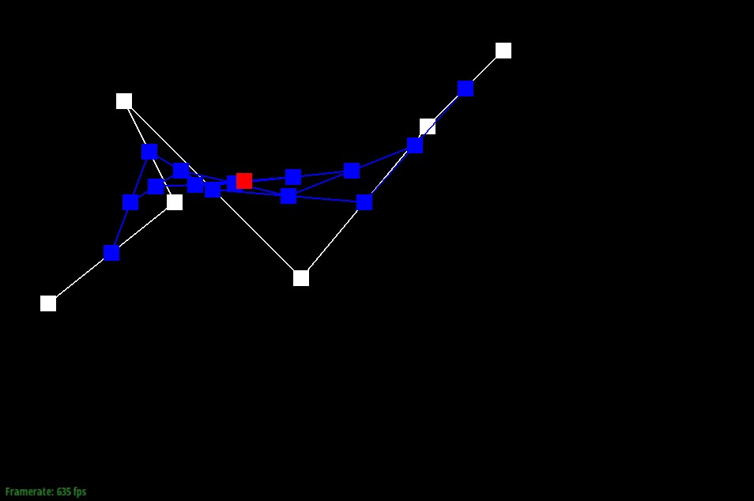 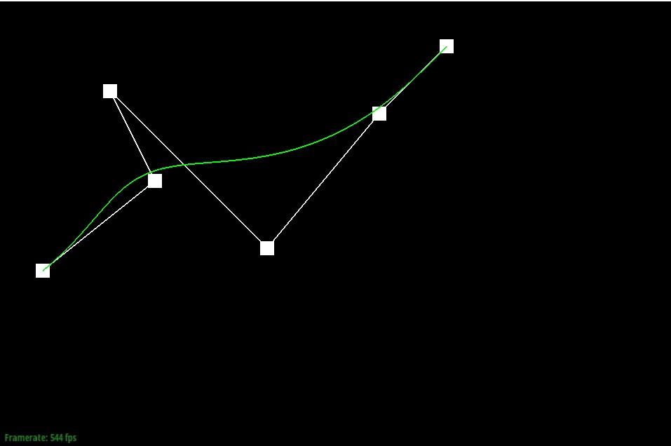The way we choose the parameter t influences the resulting placement of the bezier points. Although as you can see in the two following illustrations, despite the difference in value of t between them, the final curve is the same, but the intermediary points are different.
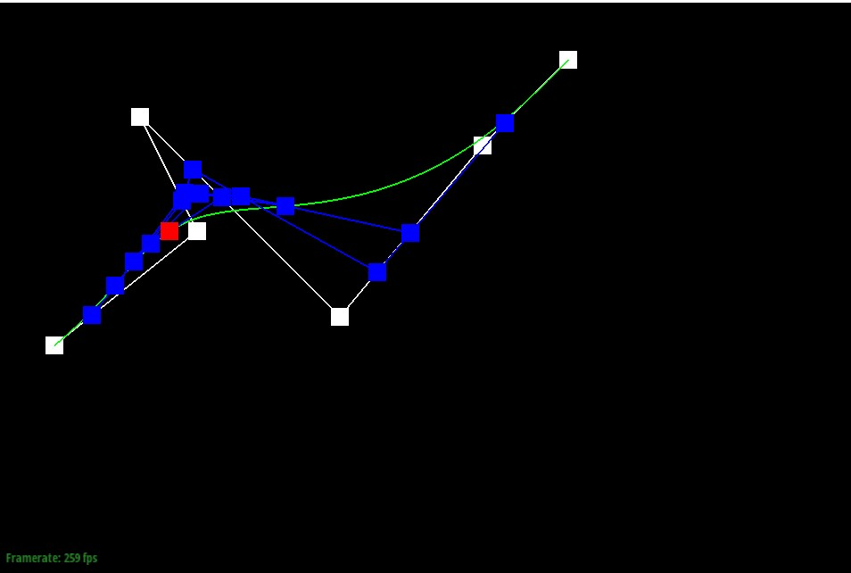 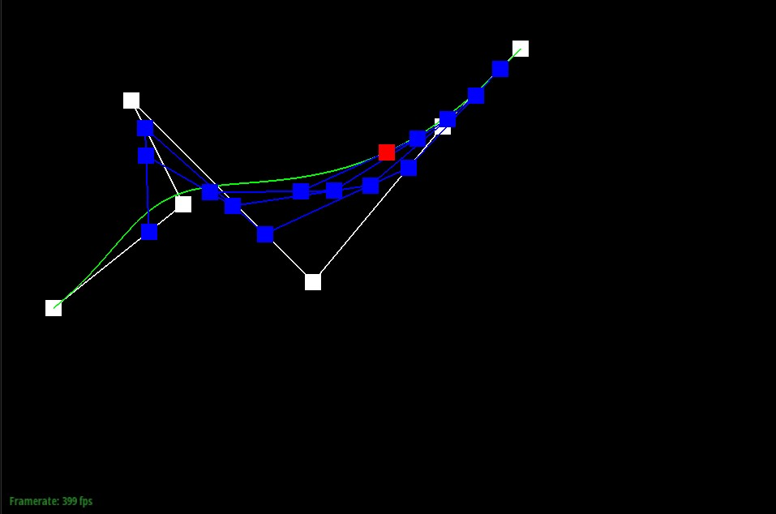The extension of de Casteljau's algorithm to Bezier surfaces is a natural progression from curves. We must begin with a grid of control points instead which act similarly to the control points from above, but instead, each point is 3d. First, we treat each row, or horisonal slice, of the control point grid as if it were a set of 2d bezier control points. Using the process described in part 2, we find the point lying on that bezier curve. We then get a 'column' of points from the rows, and again, 2d bezier interpolation is done on that column to find a single point on the surface which is used to compute the surface as a whole. Below is an illustration of how a complex image--a teapot--can be made in this way. It is especially amazing that just through the clever use of control points, something rather lifelike can be made, which returns the smoothness of the bezier function. Thus, using bezier surfaces for 3d design is a powerful tool which gives an artist precision while at the same time allowing for mathematical perfection of the slope that would be unattainable by hand.
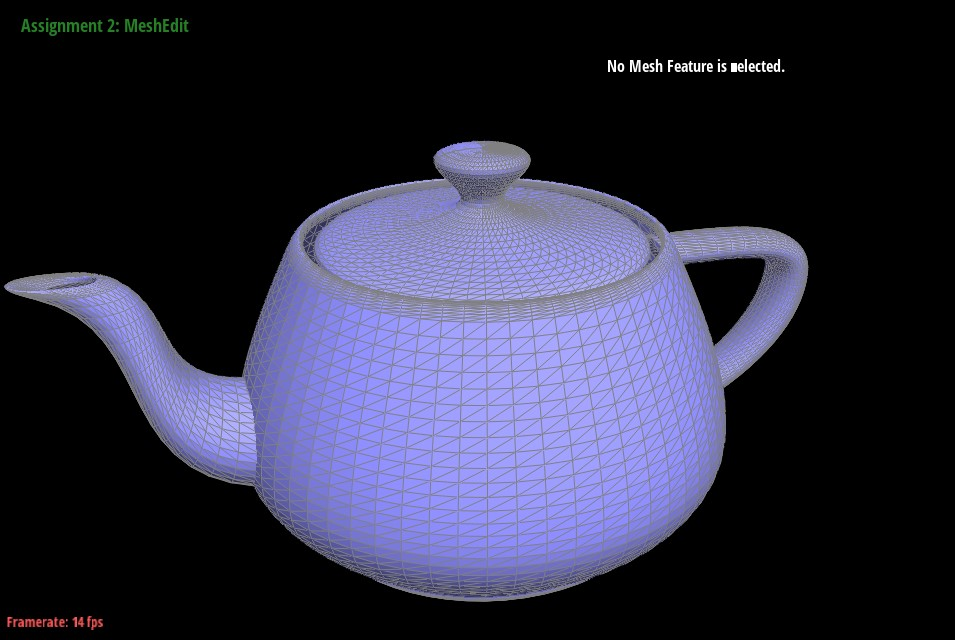For the implementation of area-weighted vertex normals, I calculated the normal of each triangle by used the cross product of two of the 'legs' of the triangle. I then summed these and assigned a weight based on the area of the triangle corresponding to that neighboring normal vector. It can be seen based on the before and after pictures below that through this use of area-weighted vertex normals, we can interpolate a smooth progressive shading over the teapot graphic.
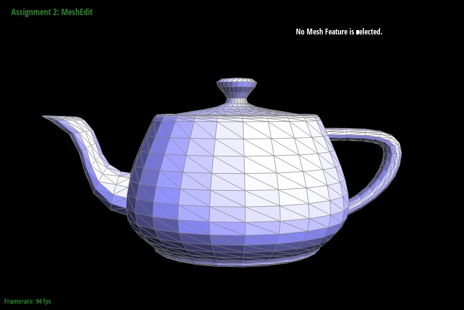 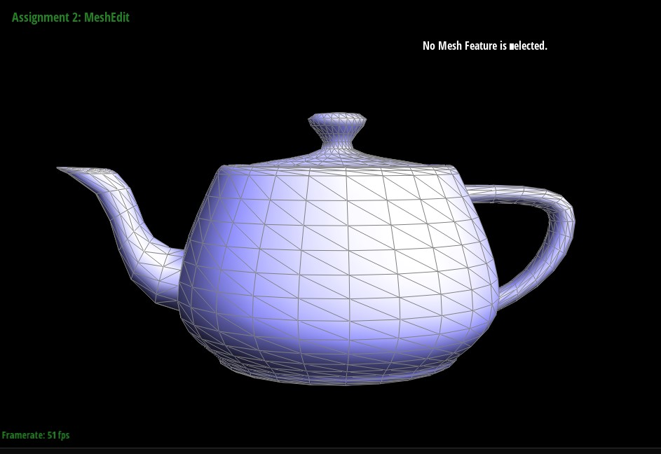Isn't this a drastic improvement over the chunky rendering above! This process is called Phong shading, and it represented a major improvement over the basic shading where each triangle is of uniform color.'
The edge flip operation is used to reconfigure the connectivity of a mesh to improve triangle quality. The first thing I did while implementing this function was to check if the edge is valid: this means that it lies between two triangles, rather than being an edge, because the operation is not defined on the boundary of a mesh. It was a rather finicky function to debug because of the many pointers that had to be set correctly, but ultimately, it is simple: the edge between two triangles that share two vertices is 'flipped' so that it instead connects the remaining vertex of each triangle to each other. The edge itsel needs to be updated, along with the halfedges within the triangles, and this is done to maintain the validity of the mesh.
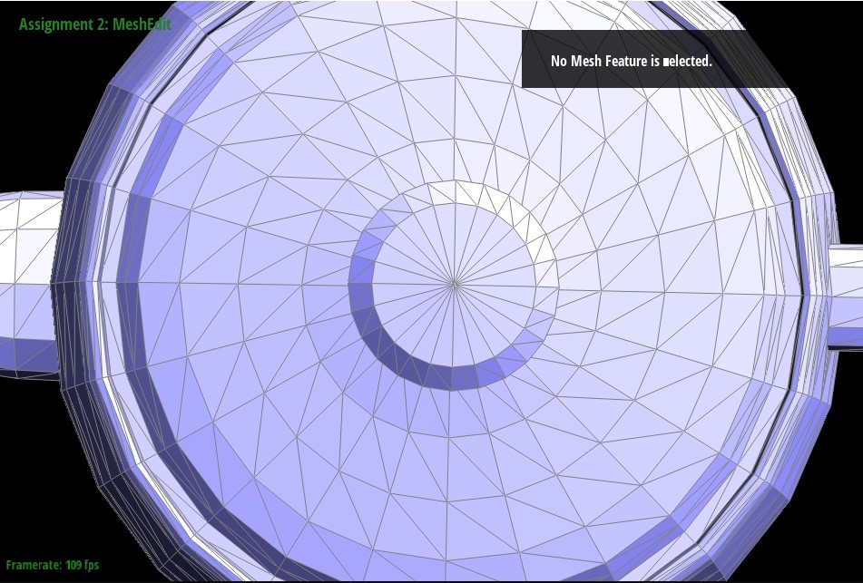 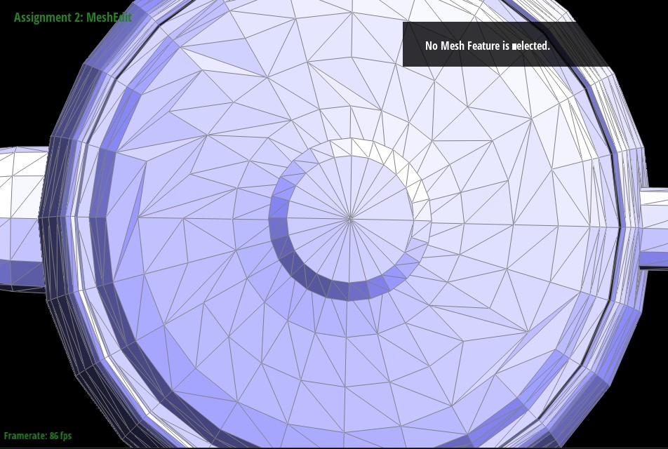The above images demonstrate this flip operation, applied at random to demonstrate how it can restructure a mesh. It is clear this can be useful in avoiding long skinny triangles which can be perceived as visually unpleasant.
While debugging, my approach was to just use the visualizer to flip edges until one didn't work correctly, and then I would return to the code to fix this. This was usually just some inconsistency such as the internal half-edges not forming a circuit within one of the 'new' triangles.
The edge split operation adds a vertex along an edge, effectively dividing it into two. This was implemented by creating a new vertex at the edge's midpoint, then updating the adjacent faces and edges to include this new vertex. I found the new vertices position by simply averaging the position of the two vertices connecting the edge which was passed in as an argument The debugging process was similar to the previous part--simply a lot of testing it out, but this time I made heavier use of the helper function which lists the connected elements of a mesh element. This was helpful, as I drew diagrams that helped me to reconstruct the mesh based on both what should happen and what was happening in my current version--this allowed me to progress much faster as there were many pointers that needed to be updated.
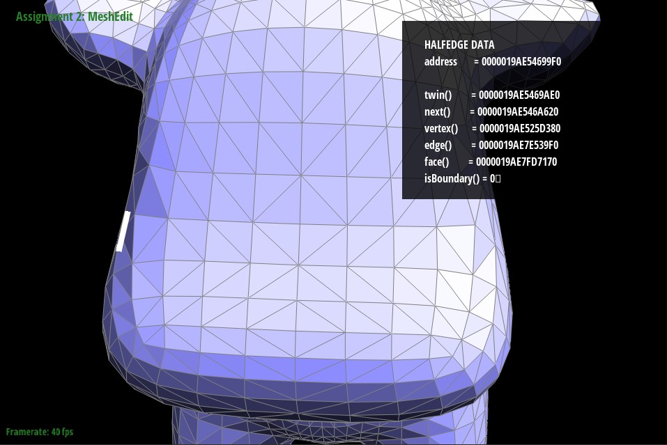The following image shows the split operation applied at random to increase the number of triangles in the mesh:
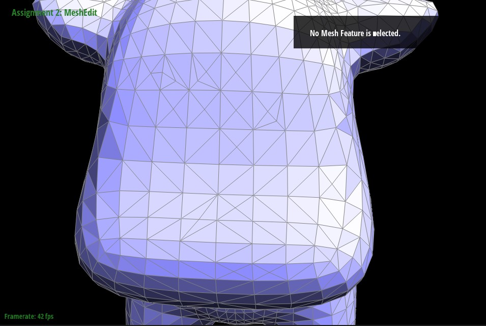Both the split and flip operations can be used together: below is a visualization of both operations applied on the same mesh.
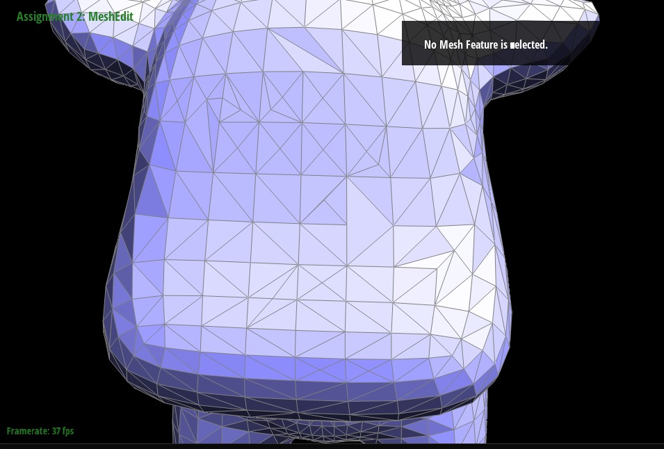Loop subdivision is a method of refining triangle meshes to produce a smoother surface. I started by calculating the updated positions of that the vertices should have in the new graph. This is because loop subdivision involves making the vertices a weighted combination of their previous position, and that of their neighbors to give more of an impression of smoothness. I did these calculations first so that I would only have to traverse the smaller graph which was not as large because it had not actually been upsampled yet. The positions for the new vertices were calculated as properties of the edges that they would come as a split of.
I then had two loops, one of which split every edge in the mesh, and the second of which flipped all the ones which were between a newly created vertex and a previously created vertex. This was done based on a mathematically proven theorem that this algorithm results in an upsampled mesh. At the end, I repositioned the vertices based on what I had calculated in the beginning.
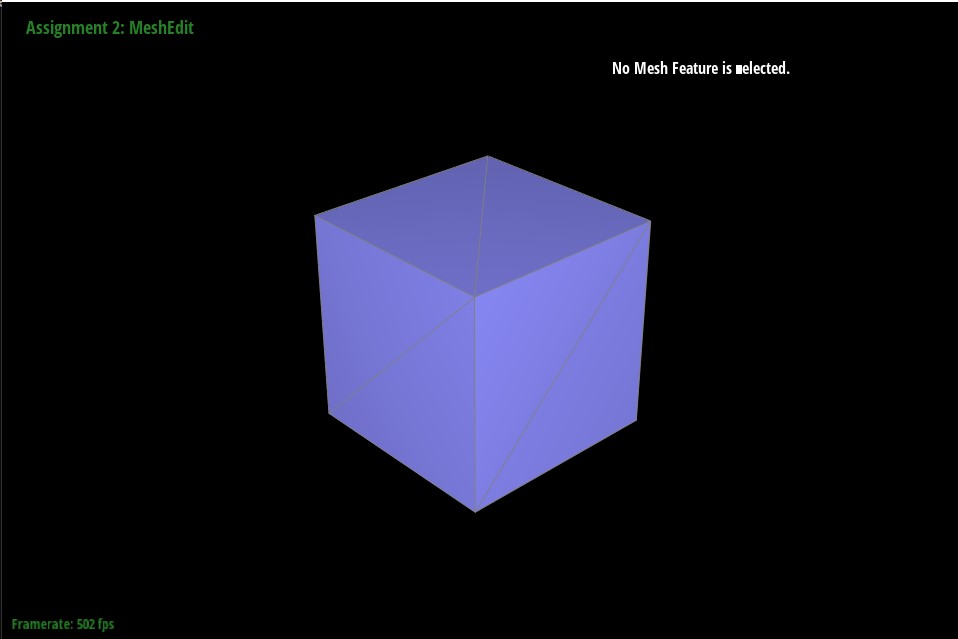 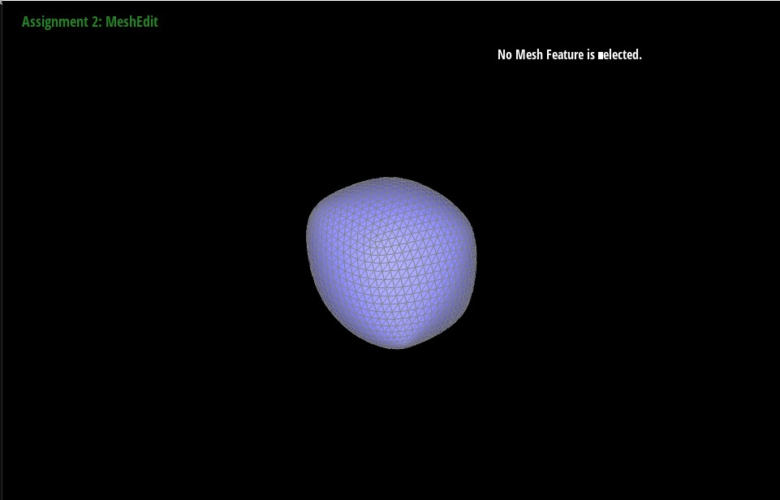Sharp corners and edges tend to smooth out after subdivision. To mitigate this, we can pre-split some edges to add more geometry and control the smoothness in those areas. The above example shows how the cube remains imbalanced and uneven after many iterations of loop subdivision.
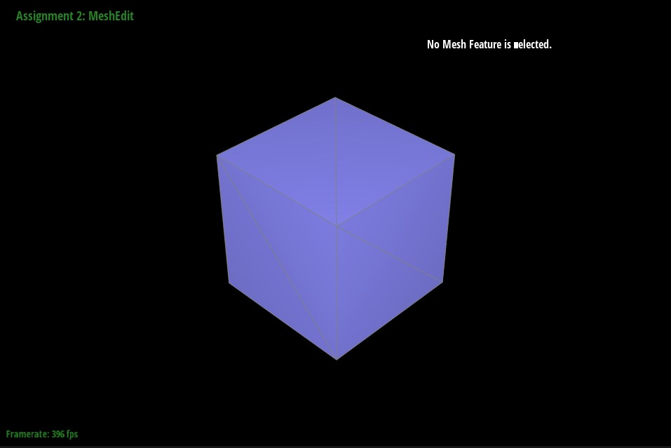 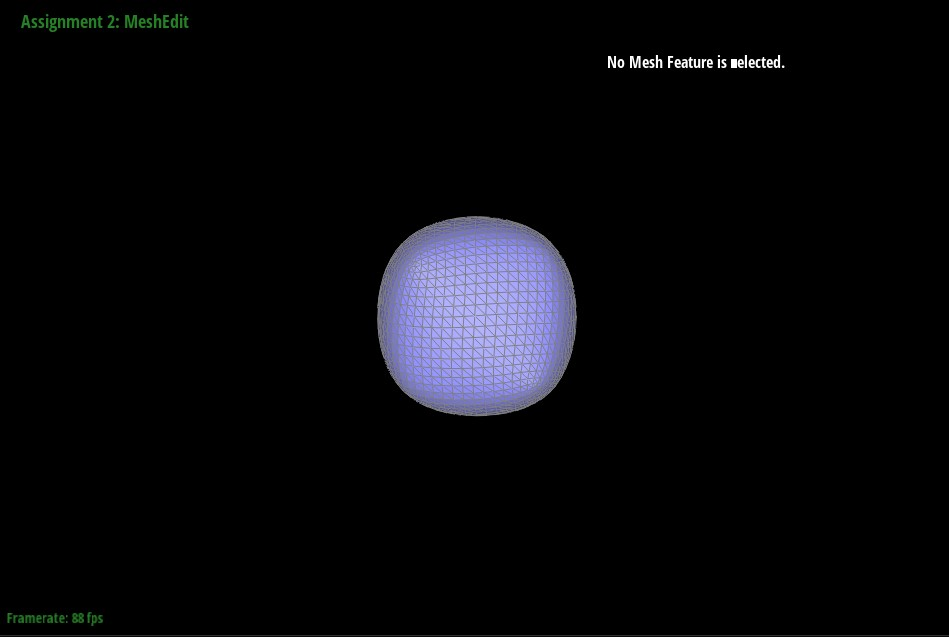Some operations can be done to make the process smoother--in particular, conducting flips to make sure the topology of the cube is more even (in this case, the crossbar on each side having the same orientation) a smoother/more symmetrical resulting upsampled mesh can be seen after many iterations!.